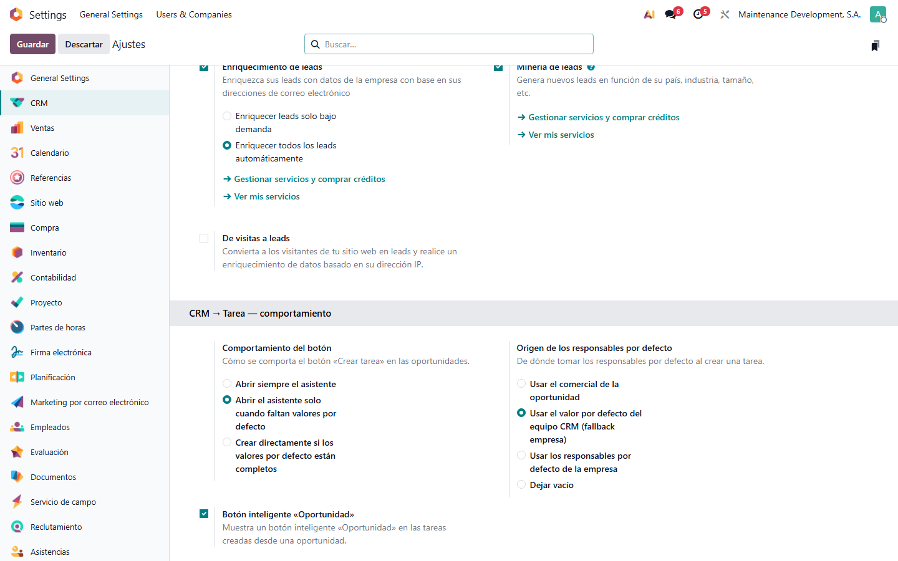
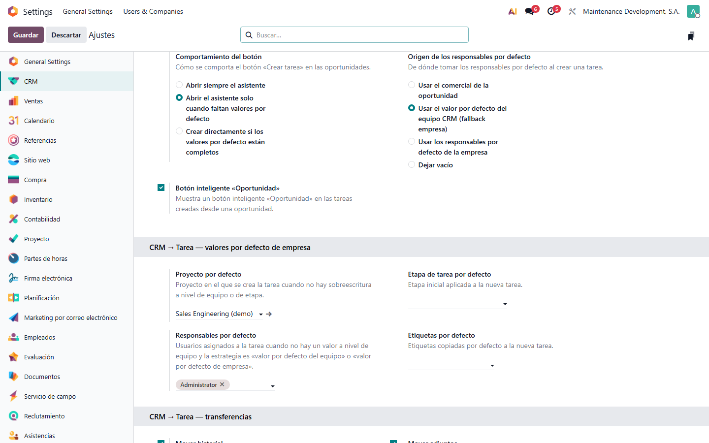
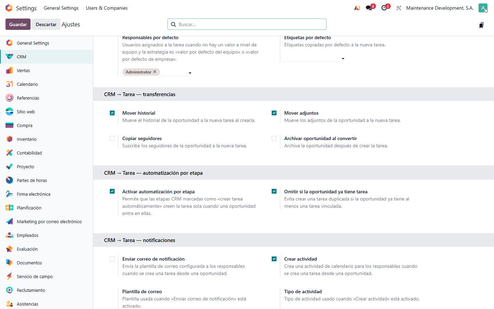
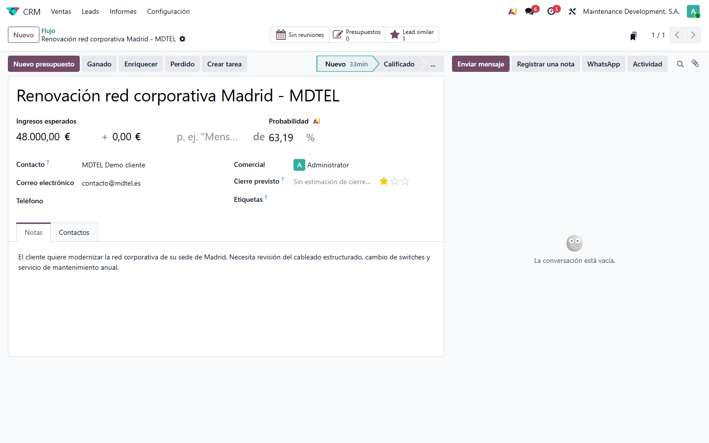
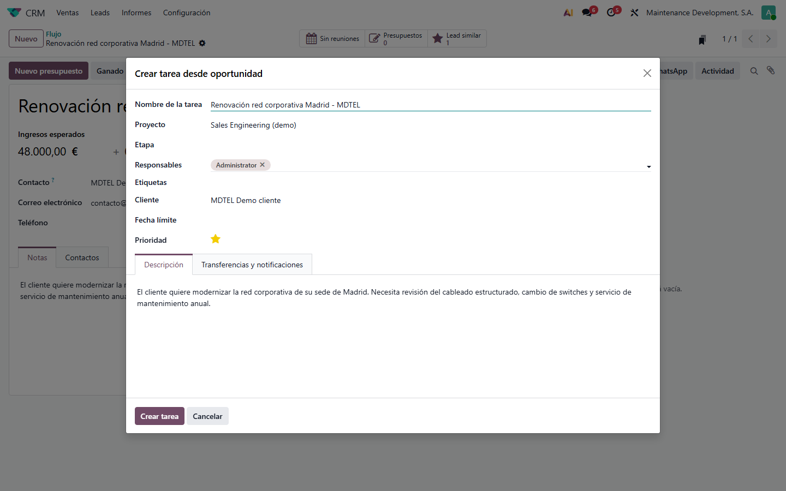
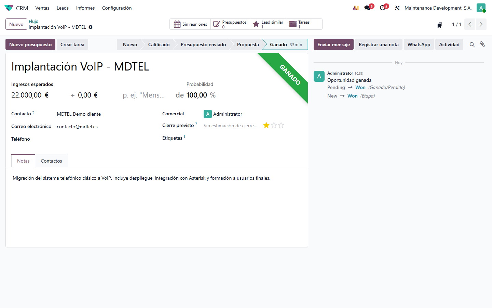
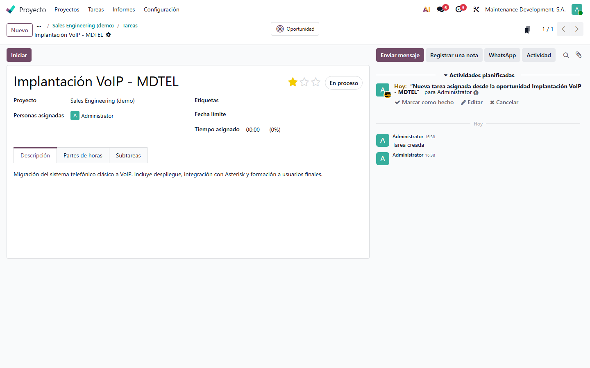
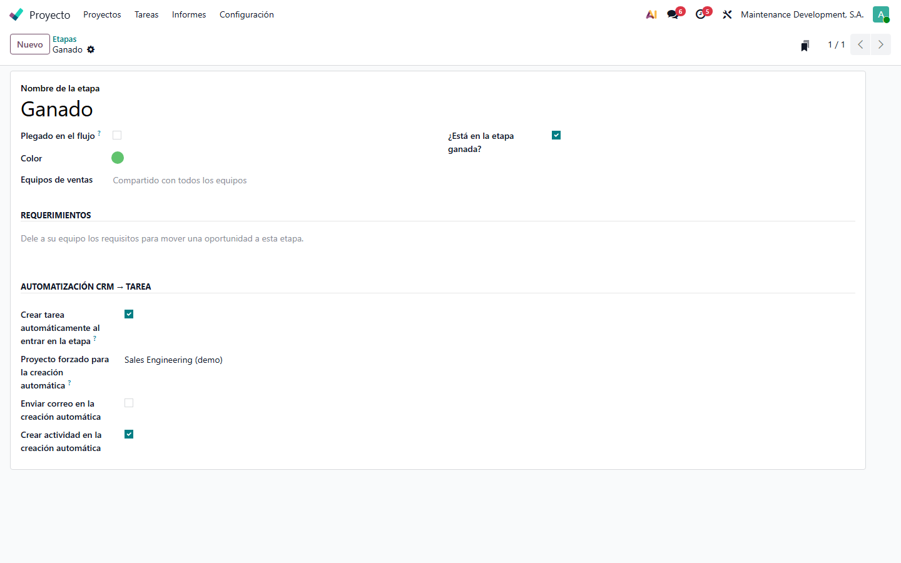

Módulo base de área de Process Control que añade un botón Crear tarea a las oportunidades de CRM y permite configurar a cinco niveles distintos qué proyecto, responsables, etapa, etiquetas y notificaciones se aplican al crear la tarea. Pensado como cimiento reutilizable en cualquier implantación: la lógica vive en el módulo y cada cliente solo ajusta los valores por defecto.
La configuración del módulo vive en Ajustes → CRM, en el bloque CRM → Tarea (Process Control). Está partida en cinco subbloques temáticos para que la pantalla sea legible y cada ajuste tenga su propio nombre y descripción.
Define cómo se comporta el botón Crear tarea y de dónde toma los responsables por defecto. Incluye además el interruptor para mostrar u ocultar el botón inteligente Oportunidad en las tareas creadas desde una oportunidad.

Aquí se eligen el proyecto, la etapa, los responsables y las etiquetas que se aplicarán a las tareas creadas cuando no haya una sobrescritura a nivel de equipo CRM o de etapa. Es la línea base que comparten todas las oportunidades de la empresa.

Estos tres subbloques se ven seguidos en la pantalla. Las transferencias deciden qué se mueve de la oportunidad a la tarea (historial, adjuntos, seguidores) y si la oportunidad se archiva al convertir. La automatización por etapa activa o desactiva globalmente la creación automática al cambiar de etapa y permite evitar duplicados. Las notificaciones configuran el correo y la actividad que reciben los responsables.

En la cabecera de cualquier oportunidad aparece el botón Crear tarea, junto al resto de acciones (Nuevo presupuesto, Ganado, Enriquecer, Perdido). Según el modo configurado, el clic abrirá el asistente o creará la tarea directamente.

El asistente prerrellena todos los campos a partir de los valores por defecto resueltos y de los datos de la oportunidad. El comercial solo tiene que ajustar lo que cambie respecto al estándar y pulsar Crear tarea. La pestaña Transferencias y notificaciones permite sobrescribir puntualmente los ajustes globales para esta conversión concreta.

Una vez convertida la oportunidad, el botón inteligente Tareas de la cabecera muestra cuántas tareas se han creado desde la oportunidad. Un clic lleva al listado filtrado para esa oportunidad.

Desde la tarea creada se vuelve a la oportunidad de origen con un solo clic. Esto permite al técnico consultar el contexto comercial sin cambiar de aplicación.

En cada etapa CRM (CRM → Configuración → Etapas) hay un subbloque Automatización CRM → Tarea. Si se activa Crear tarea automáticamente al entrar en la etapa, cada vez que una oportunidad se mueve a esa etapa se crea la tarea sin intervención del usuario, usando el proyecto forzado de la propia etapa o, en su defecto, los valores por defecto del equipo o de la empresa. La etapa permite además decidir si se envía el correo de notificación y si se crea la actividad de seguimiento.

Process Control — módulo base de área. Licencia LGPL-3.